Reappraisals, Property Taxes & the Mayor’s Budget
Hello everyone! Thank you so much for joining CM Kyonzte Toombs and I for our first FY26 Budget Conversation on Facebook Live. It was truly a robust and enlightening discussion—one that reminded me why I remain committed to creating spaces for transparency, education, and participation when it comes to Metro Nashville’s finances. Our discussion this weekend centered around three main topics: property reappraisals, certified tax rates, and Mayor O’Connell’s proposed FY26 operating budget. These are complex issues that deeply impact our community, from what we pay in taxes to how we invest in schools, emergency services, infrastructure, and our public workforce. Let me walk you through what we covered—and more importantly, why it matters.
However, before we delve into our budget conversations, I want to acknowledge Vice-Mayor, Councilmembers, council office staff, the Mayor, MNPS Board members, NCYC and everyone who helped make the 2nd Annual Youth in Local Government Day a success. Students from Cane Ridge, MLK, Stratford, Glencliff and James Lawson High School had the opportunity to meet with and propose solutions to their respective council members and school board members. You can watch the students’ powerful presentation to the council here.
The students were phenomenal. My colleagues, both on the council and school board, and I will work to make sure that we follow through with their recommendations. Many thanks to the principals, MNPS central office, the students, and of course my incredible team-Ken, Erica, Maya, Trent, Seamus, Shareefah, Jarmaine, Aldane, and our lead-Shun.
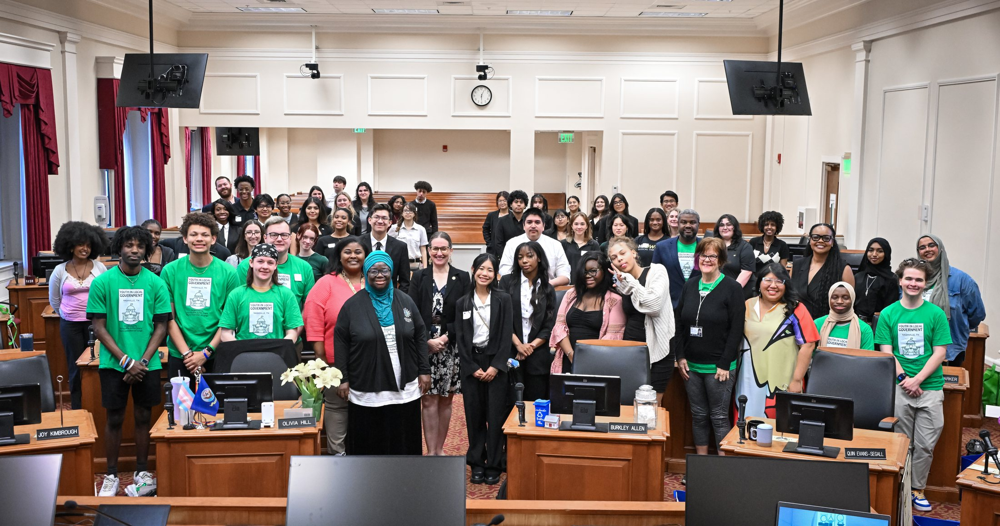
PROPERTY REAPPRAISALS: WHAT’S HAPPENING AND WHY
We began the conversation by tackling a topic that’s been top-of-mind for many: property reappraisals. Council Member Toombs and I have been hearing from neighbors across the county who are stunned by their new property values—and understandably so. Some saw values jump by 30%, 40%, even over 50%. I used the example of a friend in Antioch, whose property value increased dramatically. Why? Because growth in her neighborhood—including the new Tanger Outlet Mall—drove up land values.
Let’s take a step back. Reappraisals are conducted every four years by the Assessor of Property, currently Vivian Wilhoite, as required by state law. These reappraisals reflect countywide growth, not just changes you make to your individual home. That means even if you haven’t renovated your house, your value may go up because of what’s happening around you.
There’s a common misconception that only personal home improvements trigger reassessments. In truth, neighborhood-level economic development, new housing, and even infrastructure projects can affect values. Properties are assessed based on location, square footage, condition, construction quality, and surrounding amenities. A new school or retail center nearby can easily raise your home’s appraisal—without you laying a single new tile.
Below is the heat map published by the Assessor’s office. It illustrates how some areas of Davidson County saw increases of 38%, while others—like Bellevue—rose as much as 54%. The average increase across the county is approximately 45%.
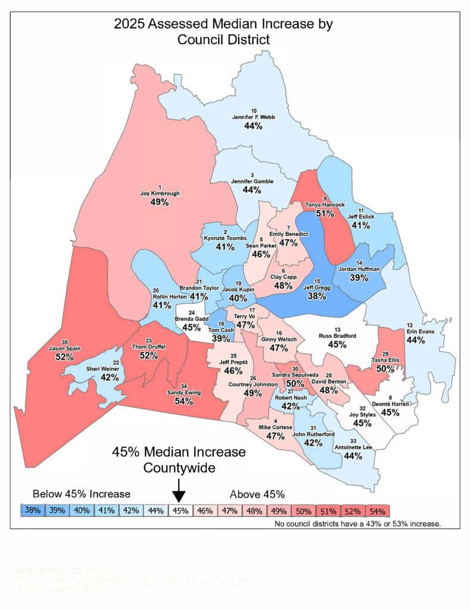
YOUR RIGHT TO APPEAL
If you’re concerned about your new value, know this: you still have time to appeal. The deadline for informal appeals has passed, but you can file a formal appeal from May 12 to June 27 by calling 615-862-6059. If you’re still not satisfied after the Board of Equalization’s decision, you have an additional 45 days to file with the State Board. Don’t feel powerless—you have rights and there is a structured process for appeals. Check out https://www.padctn.org/appeal/ for more information and for additional help,
CERTIFIED TAX RATE: WHY PROPERTY VALUE MAY GO UP BUT TAX RATE CAN GO DOWN
Next, we moved into a concept that can be a bit confusing but is crucial to understand: the certified tax rate. I’ve explained this in blog posts before (this one from 2020), but this year’s changes make it worth revisiting.
Let’s say your home value went up 45%. You might assume your tax bill is about to skyrocket. But that’s not necessarily true. State law requires that in a reappraisal year, a city cannot collect more revenue from existing properties than it did the year before—unless the Council votes for an increase.
This is part of Tennessee’s Truth-in-Taxation Law. Here’s how it works:
- Suppose last year the total value of all properties in the county was $200 billion and the tax rate was $0.25 per $100 of assessed value, resulting in $50 million in revenue.
- If values go up 25% this year to $250 billion, we can’t just keep the rate at $0.25—that would bring in more money than allowed.
- So, we reduce the tax rate to a “certified” rate—say $0.20—so we still collect the same $50 million from those same properties.
This means the certified rate adjusts downward to neutralize revenue growth from reappraisals.
But here’s the nuance: While the rate goes down, your individual tax bill may still go up if your property appreciated more than the countywide average. So, if your home increased 54% in value, while the county average was 45%, you’ll likely see a tax increase—even with a lower rate. Conversely, if your increase was below average, you might see a decrease.
This is why each person’s experience is unique. We all get the same rate, but the impact varies depending on how your property performed relative to the rest of the county.
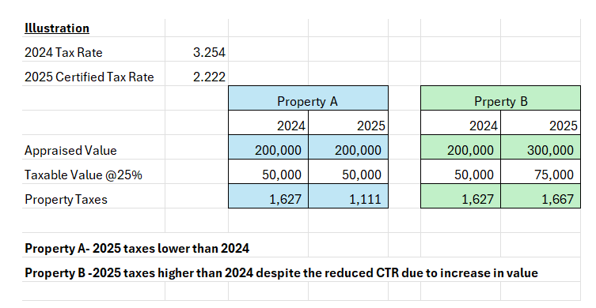
While the certified rate is projected at 2.222, the mayor has proposed a 2.84 tax rate—a 26.6% increase over the certified rate, but still lower than last year’s 3.254.
FY26 BUDGET PROPOSAL: REVENUE, SPENDING & PRIORITIES
Council Member Toombs then walked us through Mayor Freddie O’Connell’s proposed FY26 budget, totaling approximately $3.8 billion—a 15.6% increase from FY25.
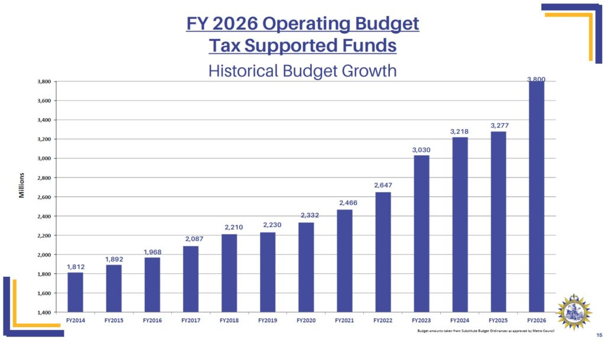
PROJECTED REVENUES
Consistent with prior years, the bulk of the mayor’s proposed revenues come from property taxes. Property tax revenue represents $2.1M or 57% of the total budget. Our next largest pot is our local option sales tax, which is about $737M or 19.4% of our budget. It is important to note that when you go to buy something at the store, and you see that 9.25% sales tax, the portion that comes to Metro is 2.25% and 7% to the state. There’s a slightly lower percentage for groceries.
Other revenue sources include other government agencies/grants of $476 million and all other revenues of $398 million. The budget also includes a $20.5M fund balance appropriation for a structurally balanced budget.
- 57% from property taxes
- 19.4% from local option sales tax
- 12.5% from state and federal government funds
- 10.5% from licenses, fees, and other local revenue
- 0.5% from the fund balance (our “savings account”)
| Property Taxes | $2,167,232,100 |
| Local Option Sales Tax | $737,431,300 |
| Grants & Other Contributions | $476,055,400 |
| All Other Revenue | $398,631,500 |
| Fund Balance Appropriation | $20,514,600 |
| Total Projected Revenue | $3,799,864,900 |
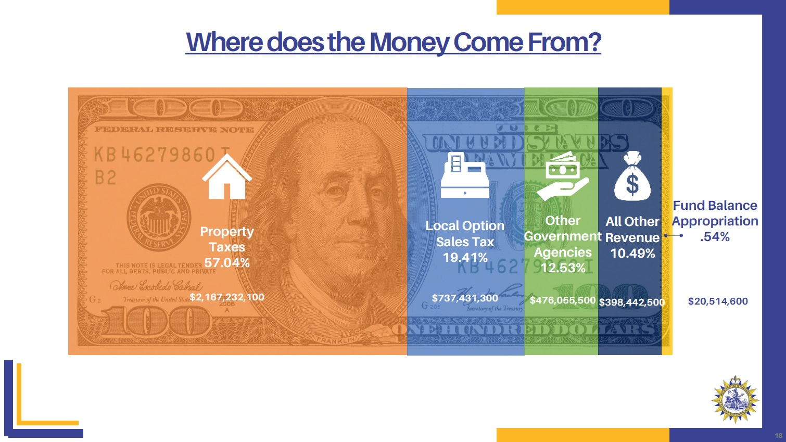
PROJECTED SPENDING
The major expense categories for FY26 are as follows: Education at 37.2%, Debt Services at 12.1%, and other metro departments combine to make up the remaining 50.7%.
| Debt Service | $459,294,700 | 12.1% |
| Education | $1,413,018,500 | 37.2% |
| General Operating Fund | $1,927,551,700 | 50.7% |
| Total Expenses | $3,799,864,900 | 100.00% |
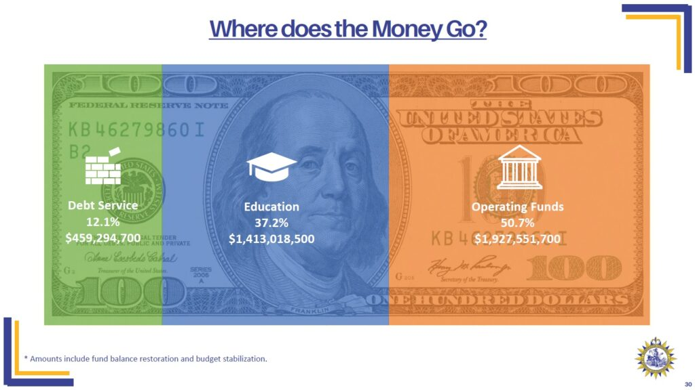
MAJOR HIGHLIGHTS FROM THE BUDGET
EDUCATION: PRIORITIZING MNPS & BRIDGING GAPS
Another major highlight: $132 million in new funding for Metro Nashville Public Schools, representing a 13% increase. That includes funding for:
- Expanded pre-K and early learning
- Teacher pay and support staff increases
- Investments in safety and mental health
- Academic recovery and enrichment programs
But we also addressed a hard truth: State funding is still lagging behind. While Tennessee’s formula says the state should cover 43% of MNPS’s costs, we only receive about 21%. That leaves Metro to cover 79%, far beyond the statewide average.
We’ve heard the calls to action. Community members are rightly asking: When will we demand that the state step up? The school board has taken action, including legal challenges in the past. But more advocacy is needed at all levels to demand fair state funding.
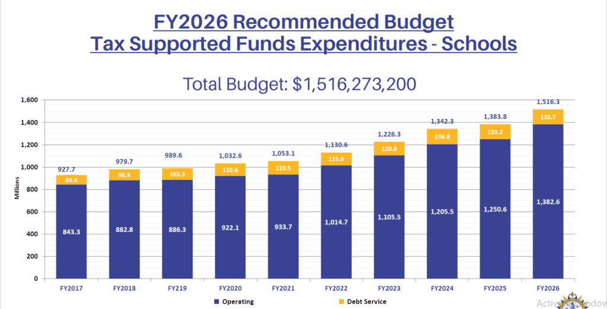
EMPLOYEE PAY PLAN: FAIR WAGES FOR PUBLIC SERVANTS
A significant part of the proposed budget—$55.8 million—goes toward improving pay for Metro employees. This includes:
- A 1% across-the-board raise
- 2% merit increases
- Expansion of the step plan from 10 to 15 steps
- Annual step increases instead of every two years
- A revised pay structure aligned with market rates
There’s been some debate about how we label these adjustments. Union leaders strongly prefer the term “Cost of Living Adjustment (COLA)” rather than “market adjustment” or “merit raise.” This conversation will continue on May 31, as we host union leaders to discuss the implications of the new HR pay plan.
Let me be clear: Our public servants deserve to be paid fairly. They keep our city running—picking up trash, teaching children, maintaining parks and protecting us in emergencies. Budgeting for employee pay is not a luxury—it’s a necessity.
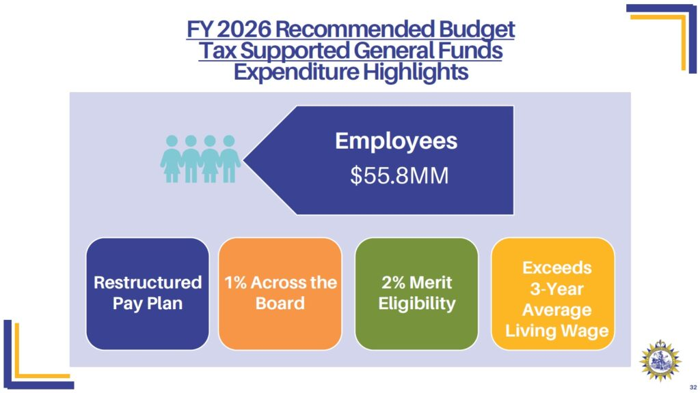
RESTORING & SUSTAINING THE FUND BALANCE
This year’s budget includes two relatively new concepts:
- Fund Balance Restoration – Revenue collection was less than projected, which contributed to a dip into fund balance. We are now restoring those funds—$64.1 million in this year’s budget to ensure compliance with the fund balance policy.
- Budget Sustainability Fund – A new “rainy day” account the Finance Director can access if revenue falls short. Think of it as a financial cushion to avoid emergency cuts. The budget includes $74M for the budget sustainability fund.
These aren’t slush funds. They’re smart financial policies designed to protect essential services—so that the fire department still shows up, trash still gets picked up, and schools stay open, even in hard times.
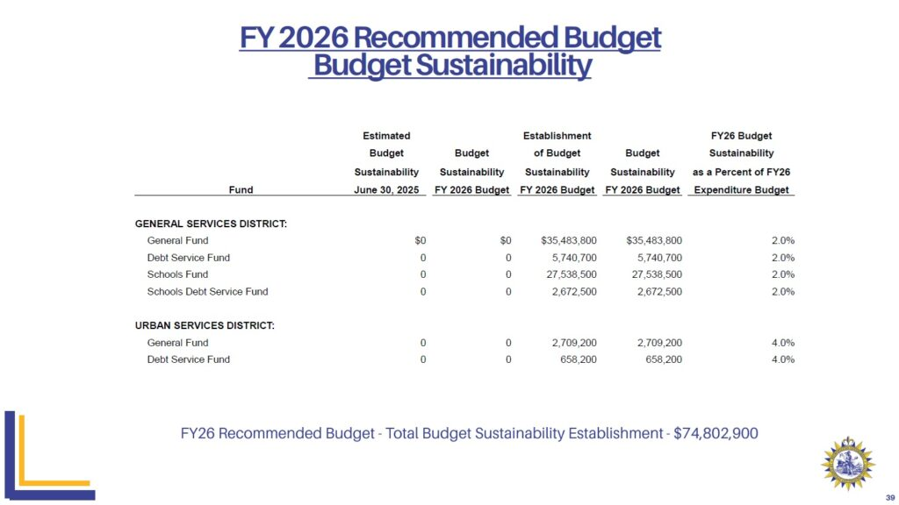
ADDITIONAL HIGHLIGHTS FROM THE FY26 MAYOR’S BUDGET
- $24.7 million increase for MNPD (including new school resource officers and transit division)
- $15.3 million increase for Metro Fire (including a new truck company in Antioch and EMS units)
- $45 million toward a Unified Housing Strategy to address affordable housing
- Investments in public health: HIV prevention, mobile clinics, Nashville Strong Babies
- Parks and Recreation enhancements, including nighttime code inspectors and expanded wellness programming
The mayor’s budget is now before the council, with a public hearing and a second reading on June 3rd. Council still has time to make adjustments to the budget & vote on the final rate no later than June 30. To access the “Metro Finance Citizens Budget” follow this LINK.
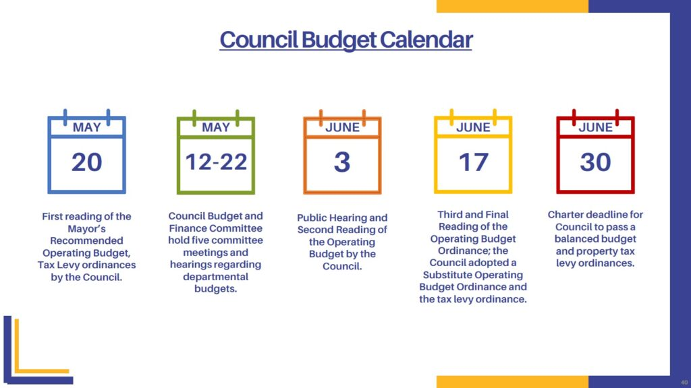
Q & A
Instead of increasing property taxes, why not look into other sources of revenues?
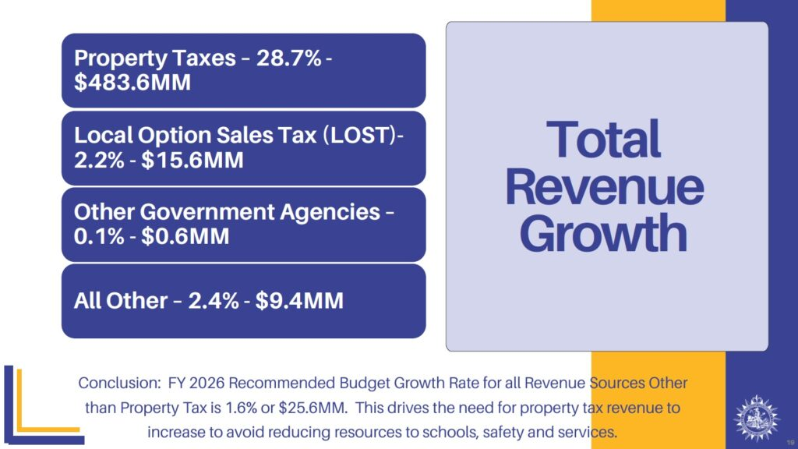
Here’s something important to understand: Of the $529 million in new revenue, more than $500 million is from property taxes. Revenue growth from other sources—like sales tax—is expected to be minimal, just 1.6%. That means we’re heavily reliant on property taxes to maintain and improve services.
Is there a breakdown of all the expenses ?
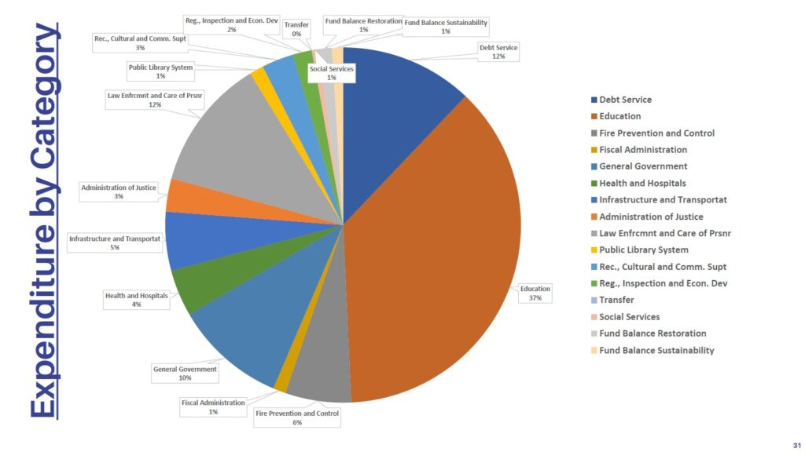
Why did the Fire Department Budget increase by over $100M?
Council passed resolution RS2022-1312 for an analysis of the Urban Service District/ General Service District (USD/GSD) revenues and expenses. Prior to the study, some expenses including Fire Services were shared by USD/GSD. The study indicated that Fire expenses are countywide and therefore should be allocated to the GSD. The reallocation resulted in increased fire expenses in the GSD and a corresponding decrease in USD.
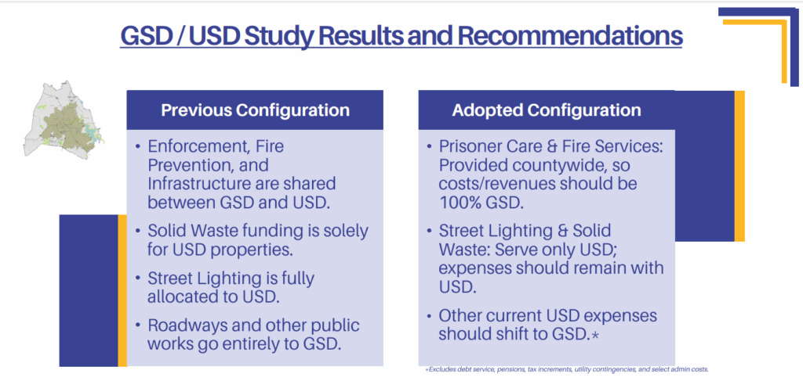
For those who missed my conversation with CM Toombs, you can watch it at the link below. And I encourage you to tune in each Saturday until the budget is passed—we’ll be diving into different aspects of the budget and how it affects all of us.
NEXT BUDGET CONVERSATION- COMMUNITY SAFETY
On the next Budget Conversations, I will be joined by several community leaders to discuss community safety. What is safety? What does safety mean to different constituents and how do we work together to ensure safety for all Nashvillians? Join CM Preptit, CM Kupin, Brenda Perez, Andrew Krinks, Pastor Davie Tucker, Mike Lacy and I as we Define, Envision & Explore Community Safety. Conversations will take place at Trinity Community Commons located at 204 Trinity Lane. Folks can join in person or on Facebook live at https://www.facebook.com/CouncilmemberZulfatSuara/ with questions & comments.
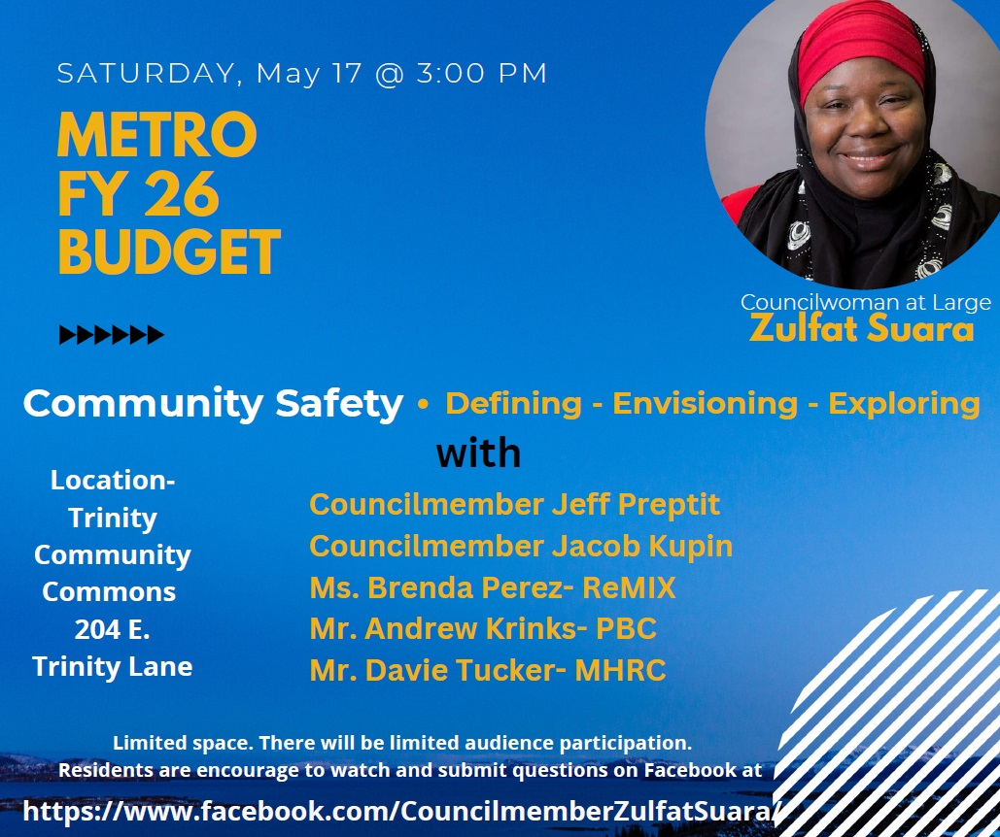
LOOKING AHEAD: HOW TO STAY ENGAGED
Here are several ways you can get involved:
- Join our next Facebook Live session on Saturday at 3:30 PM – we’ll be discussing community safety in light of recent events.
- Mark your calendar for the Public Budget Hearing on June 3 at 6:30 PM – your chance to speak directly to Council.
- Contact your Council Member – let them know your priorities for the FY26 budget.
- Review the Budget Book and citizen resources.
FINAL THOUGHTS
Budget season is about more than numbers—it’s about people. It’s about setting our priorities, funding our values, and ensuring that all residents—no matter their ZIP code—feel seen and supported.
While we may not all agree on the best path forward, I believe we can agree on this: we all want a Nashville that works for everyone. That means making hard choices, being transparent, and continuing these conversations in our community.
Thank you again for joining us, and thank you for continuing to care.
With gratitude,
Zulfat Suara
Metro Council Member At-Large